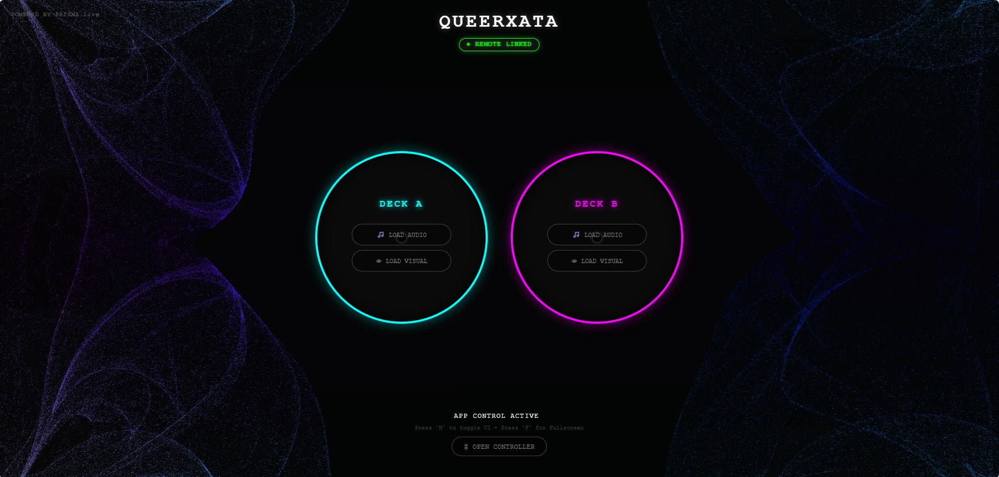

PRISMA.live
PRISMA.Live es una plataforma interactiva que transforma al público en creadores. Diseñada para fiestas y talleres, permite a los asistentes usar su móvil o navegador web para controlar el sonido y los visuales de la pantalla grande en tiempo real, co-creando una experiencia AV inmersiva al instante.